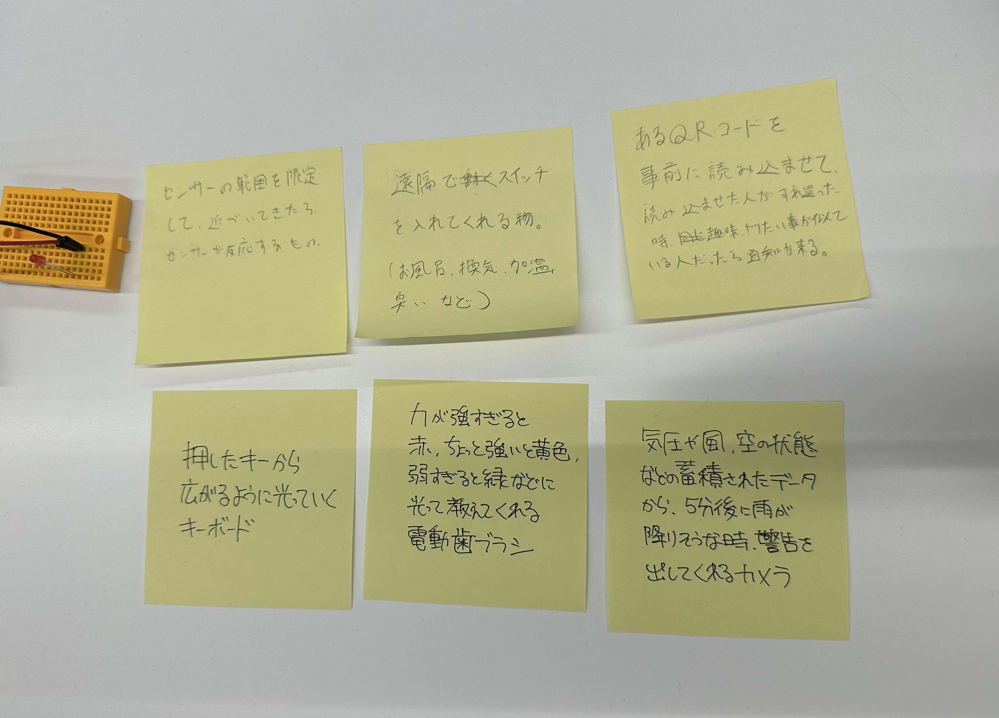
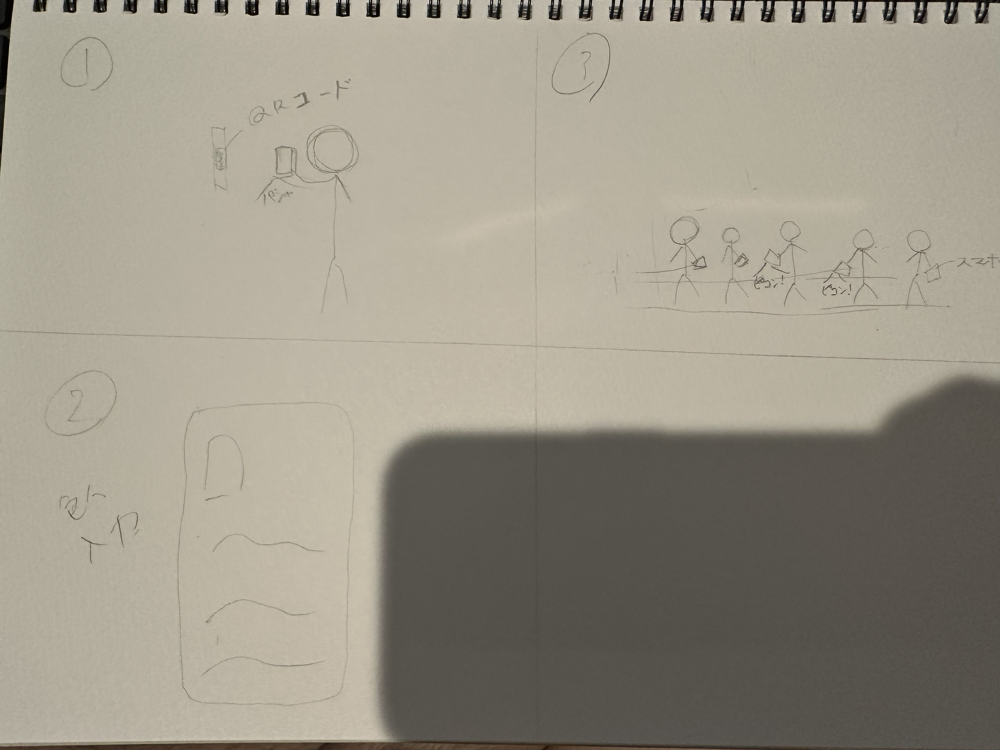

第二回
新しいIOT
ポストイット

こちらがグループで考えた新しいアイデア。
サービスなのか、モノなのか二つに分かれた。
その中で今回選んだのは「あるQRコードを事前に読み込ませて、読み込ませた人たちがすれ違った時、趣味ややりたい事が似ている人だったら通知がくる。」というものを選択した。
アイディアスケッチ

1,まずは、事前にQRコードを取り込んでおく。
2,自身の趣味、写真、今日やりたい事などを記入しておく。
3,街に出て、似たような人がすれ違った時通知が来て、そのまま遊ぶ。
といったようなものである。